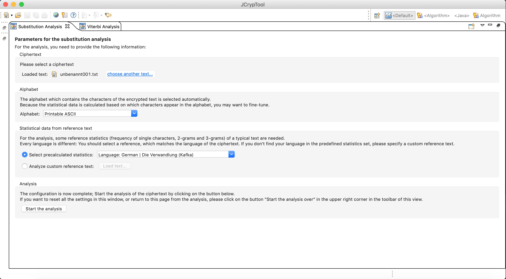
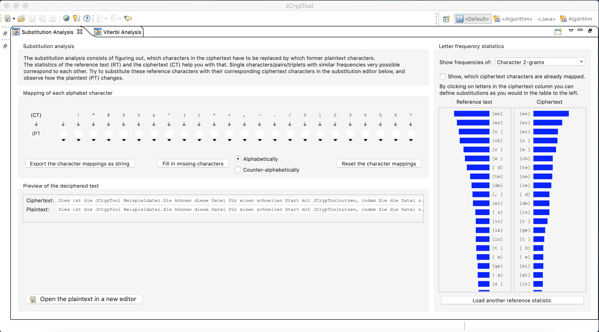

Substitution ciphers allow to encrypt plaintexts by replacing sequences of letters with ciphertext. The sequences of letters here may be single letters, pairs, longer n-grams or a mixture of these. In order to decipher the text, the substitution is applied in reverse.
Substitution analysis aims to detect which characters or character sequences to replace to retrieve the plaintext. In order to do this, statistics of a reference text and the ciphertext are used, as often characters or sequences of characters substituted for one another appear with the same frequency. The reference text is used to gain a reference statistic to compare the ciphertext too. For this, a text in the same language over the same alphabet should be used to derive the correct frequency of character sequences.
The Substitution Analysis plugin allows to load a ciphertext and analyse the frequency of letter sequences based on a reference text. Different substitution assignments can be tried and their effect on the plaintext viewed directly.
To perform the substitution analysis first provide a ciphertext. The alphabet matching the characters of the ciphertext will be selected automatically, but a customisation option is provided for fine-tuning. A custom reference text can then be loaded and analysed or the precalculated statistics for a set of reference texts can be used. The analysis can now be started.

The "Letter Frequency Statistics" panel on the right-hand side shows the letter frequency statistics. The length of the character sequence analysed can be varied using the drop-down menu at the top. The option to change the reference text is given using the bottom button. By clicking on the letters in the ciphertext column, the substitutions can be defined directly. This can also be done using the table in the “Mapping of each alphabet character” panel.
The “Mapping of each alphabet character” panel provides a few more options on deriving the character mapping. For example, using the corresponding button and radio-buttons, the character mappings can be filled in alphabetically or counter-alphabetically automatically. The mapping can then be exported as a string or reset.
The effects of the applied substitution can be followed in the “Preview of the deciphered text” panel. The ciphertext along with the plaintext are displayed. Optionally, the plaintext can then be opened in a new editor using the corresponding button.
